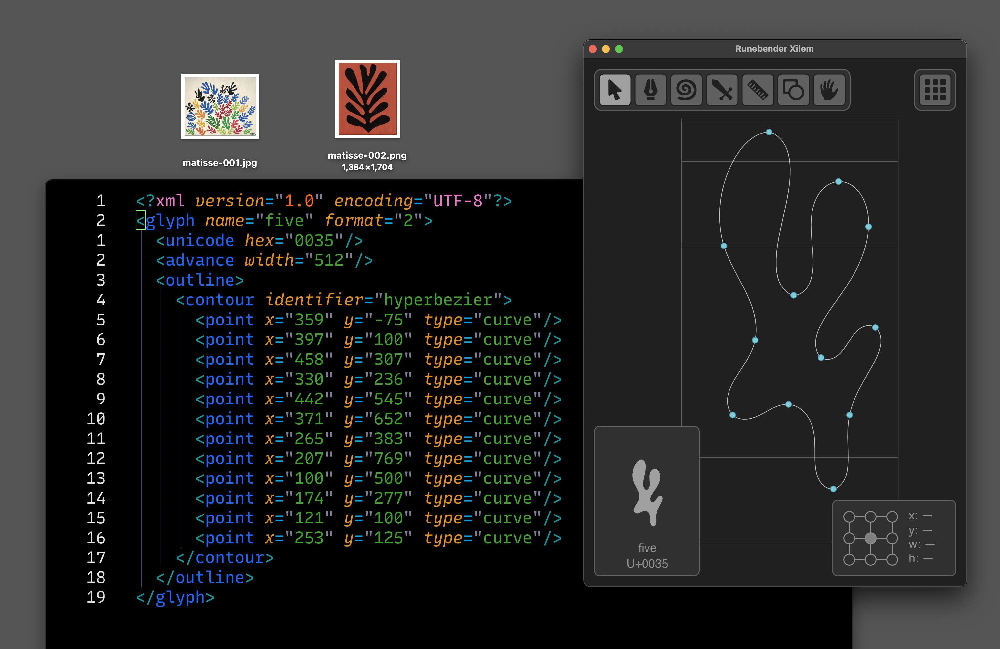

Build and open a UFO
Install Rust, clone the repo, run the app, open assets/untitled.ufo, save safely.
Rust / Xilem / UFO / Very alpha
A font editor and field manual for building, inspecting, tracing, and editing font sources with open formats.

Until releases exist, the honest call to action is source, build notes, and examples.
Glyphs and RoboFont both succeed because users can learn workflows, not just features.
Formats, shortcuts, tracing, hyperbeziers, and architecture should be readable.
The site should behave less like a pitch deck and more like a working index. RoboFont foregrounds docs, topics, tutorials, how-tos, reference, extensions, and education. Glyphs pairs a polished product page with a deep Learn section, handbook, forum, and plug-in resources. Runebender can take the open-source version of that pattern.
Install Rust, clone the repo, run the app, open assets/untitled.ufo, save safely.
Select, pen, hyperbezier pen, knife, point type conversion, contour direction.
Import a drawing, scale it to metrics, trace locally with img2bez or cloud trace.
Explain what data Runebender writes, including hyperbezier storage and fallbacks.
Document text preview, fitting, zoom behavior, metrics, and repeated proof strings.
Xilem UI model, file IO, font object model, settings, tools, and contributor paths.
| Clone | git clone https://github.com/eliheuer/runebender-xilem.git |
|---|---|
| Run | cargo run -- assets/untitled.ufo |
| Status | Very alpha, actively under development. |
| Format | UFO sources, with documented extensions where needed. |
| V / P / H / K | Select, pen, hyperbezier pen, knife. |
|---|---|
| Space | Hold for temporary preview mode. |
| Cmd/Ctrl + I | Import background image. |
| Cmd/Ctrl + T | Trace background image into bezier paths. |
Product hierarchy is clear: Glyphs 3, Glyphs Mini, tools, features, learn, forum, resources, news. The useful idea is the loop between marketing, tutorials, handbook, plug-ins, and community.
glyphsapp.comThe handbook is a parallel product: create, settings, edit view, palette, font view, font info, import/export, spacing, kerning. Runebender needs this level of naming.
handbook.glyphsapp.comRoboFont treats scripting and extensions as core identity. Its docs split into topics, tutorials, how-tos, reference, extensions, Mechanic, education, and Discord.
robofont.com/documentationThe site should not imitate a finished commercial app. The stronger move is direct, source-first, documentation-heavy, and visually uncompromising.
runebender-xilemNo generic cards. No product gradients. No fake app chrome. Use HTML elements that mean something: tables, ordered lists, figures, captions, code, indexes. The visual language is gray paper, dark text, dense alignment, hard borders, large type, and deliberate friction.